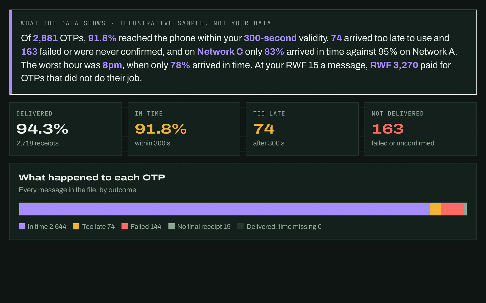

Customer messaging
OTP & SMS Delivery Lens
How many one-time passwords and alerts reach the phone in time, network by network, and what the late ones cost.
BanksFintechsE-governmentAirlines
You need One export of SMS delivery receipts
Open the trial